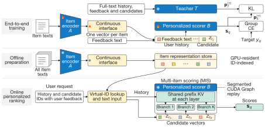
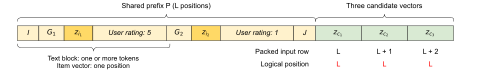
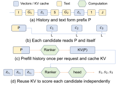

DuoLM: Fast and Effective Personalized Recommendation with Language Models
语言模型逐个阅读物品全文，在线推荐成本很高。作者把每件物品预先压成一个向量，再让排序模型结合用户历史和反馈打分；同一请求的候选共享历史缓存。在单张 H100 上，吞吐约为每秒 2.64 万个候选分数。
INSIGHT可复用的内容表示和个性化判断可以分开计算，再用同一个推荐目标联合训练。压缩模型只是第一步；把重复的历史预填充、输入传输和调度一起削掉，才会兑现端到端吞吐收益。
推荐模型可以提前读完物品内容，把在线计算留给“这个用户是否喜欢它”。DuoLM 用一个编码语言模型压缩物品，再用另一个排序语言模型结合用户历史打分。它的重点不仅是缩短输入，还包括把省下来的计算真正变成服务吞吐。
1. 问题：模型变小，服务为什么还不够快
完整文本交叉编码器会把用户历史、历史反馈和候选内容放在一起读。这样能利用丰富语义，但候选表示依赖当前用户，不能作为固定商品向量在所有请求之间复用。每次排序都重读物品描述，成本很高。
传统双塔容易缓存向量，却可能丢失细粒度偏好。把全文压成一个向量也有同样风险：若编码器只学通用文本语义，未必保留用户判断所需信息。DuoLM 因此让压缩和个性化判断共同接受推荐监督。
还有另一类浪费发生在模型之外。同一次请求的候选共用用户历史，但服务可能逐候选构造输入、传输数据并调度。即使推理引擎复用了部分缓存，这些准备开销仍可能存在。模型越快，外围开销就越显眼。

2. 方法：哪些信息提前算，哪些在线算
物品编码器读取模板化文本，取结束位置的隐藏状态，作为一件物品的表示。排序器收到的是这个连续向量，而不是原来的整段词元。历史物品和候选物品使用同一个接口，历史条目旁边还保留用户评分等文本反馈。
两个模型之间并非简单拼接。连续向量的尺度需要适配排序器原生的词向量，否则输入幅度改变可能影响已有模型的计算。论文使用归一化和可学习的尺度校准。它比较了多种读取方式，最简单的结束位置读取在所测设置中表现最好。
训练时，编码器并没有冻结为一个通用向量服务。推荐损失的梯度通过连续接口传回编码器，使物品压缩保留有助于用户判断的信息。只有训练完成后，物品向量才被离线计算并缓存。
教师模型读取物品全文，在同一个用户历史和候选组中输出分数。学生既学习真实的下一件物品标签，也学习老师在候选组里的相对偏好。老师分数预先缓存，学生训练无需每一步重新运行老师。
作者区分两种反馈放置方式。一种让编码器也看到用户评分，缓存单位就变成“物品与评分的组合”；另一种把反馈留给排序器，每个物品只需要一份表示。两者质量相近，后者更利于跨用户复用，因此成为默认选择。

在线路径采用虚拟词元 ID。请求只发送物品标识和反馈，服务端再从显存中的表取出向量，减少向量传输与输入准备。这里的 ID 是访问连续表示的接口，不是让模型生成商品语义编码。
多物品评分把同一用户的候选放进一个请求。历史只预填充一次，得到的键值缓存由各候选分支共享。注意力掩码禁止候选互相读取，避免把独立打分悄悄改成依赖候选排列的联合判断。

作者还把这一评分路径接入 CUDA Graph，即预先记录一段 GPU 操作并重复执行，减少调度和内核启动开销。物品表示复用、历史缓存共享和执行图重放，分别节省不同位置的成本，不能把总收益全部归给某一个技巧。
3. 核心贡献：表示和运行时一起设计
这项工作的可迁移点，是把“用户无关的内容理解”与“用户相关的偏好判断”明确分开。前者跨请求缓存，后者保持对用户历史和反馈的访问，两者通过任务监督共同学习。
运行时也遵循同样的边界。固定物品内容在用户之间共享，用户历史在候选之间共享，候选评分保持独立。这样，哪些结果能复用、复用到什么范围，都有清楚定义。
论文没有只拿模型计算量说明效率。它比较端到端请求吞吐和完整请求尾延迟，也拆分多物品评分与执行图带来的增益。这让“结构上更省”与“服务实际上更快”之间的因果链更容易检查。
4. 实验：质量接近老师，吞吐明显提高
推荐质量主要在 Amazon Books 和 Video Games 上评估。下面分别列出两个任务中的 NDCG@10；它奖励相关物品出现在更靠前的位置。不同数据集的绝对值不适合直接横比。
| 模型 | Books | Video Games |
|---|---|---|
| HLLM | 0.5508 | 0.5025 |
| DuoLM | 0.5586 | 0.5298 |
| 全文教师 | 0.5440 | 0.5313 |
学生在 Books 上超过老师，在 Video Games 上接近老师。这支持单向量压缩可以保留较多推荐信息，但没有证明任何领域、任何文本长度都能无损压缩。
在相同 H100 和相同请求轨迹上，每次请求有一百个候选。高并发时，DuoLM 约每秒输出 2.64 万个候选分数。这里的单位是候选分数，不是用户请求；两者不能混用。
同一高并发配置中，完整请求的 p99 延迟约为 537 毫秒。老师使用 vLLM 并开启自动前缀缓存，仍远慢于学生路径。这个对照既包含模型压缩，也包含专用运行时优化，因此不等于“只改服务引擎就获得全部加速”。
消融中，更复杂的物品读取器没有胜过结束位置读取。增加蒸馏权重也没有继续提高质量，额外对齐全文教师的隐藏状态反而变差。这些结果提醒我们，老师提供的信息越多，不一定越适合小模型的输入接口。
5. 局限：缓存不会免费保持正确
论文展示的是两个电商类别和指定 GPU 上的结果，没有提供真实社区搜索的线上试验。它能说明内容压缩与用户反馈结合的可行性，不能直接回答实时帖子更新、长评论链或强时效事件的表现。
物品向量表需要随内容和模型更新。文中把编码放到离线，但完整系统仍要处理向量版本、增量刷新和显存容量。物品文本经常变化时，编码开销只是移到了另一条链路，并没有消失。这是从架构推导出的工程约束。
另一个推导出的约束是缓存边界。共享前缀只在用户历史与上下文一致时成立；候选隔离掩码也要正确。若业务排序本来就需要列表内多样性或竞争关系，不能把独立评分接口直接当作整页联合优化。
质量比较还要保留候选构造与评价协议。Books 上的结果和另一篇论文的全目录指标，即使命名都叫 NDCG@10，也未必可比。复现时应沿用原文候选组，再单独扩展到业务召回池。
6. 实践意义：适合从哪里试起
内容丰富、用户历史可用的排序环节，可以检验这种拆分。选一批稳定物品，把文本压缩成可缓存向量，再加入原有历史和反馈。重点比较长尾物品和偏好细分，查看压缩是否抹掉对少数用户有价值的细节。
服务实验要分别计量编码缓存命中、历史预填充、输入准备和 GPU 执行。以候选数和用户请求数分别报告吞吐，同时保留尾延迟；这样才能知道收益来自减少计算，还是批量调度改变了负载。
对 UGC 搜索，还应加入新帖和编辑帖的刷新测试。记录内容改变到新向量生效的时间，并让排序日志携带向量版本。可复用表示只有与内容新鲜度一起管理，才会成为可依赖的线上接口。
来源：原文第 2–4 节与附录 A、C、D；三个机制图均来自作者的 arXiv HTML。